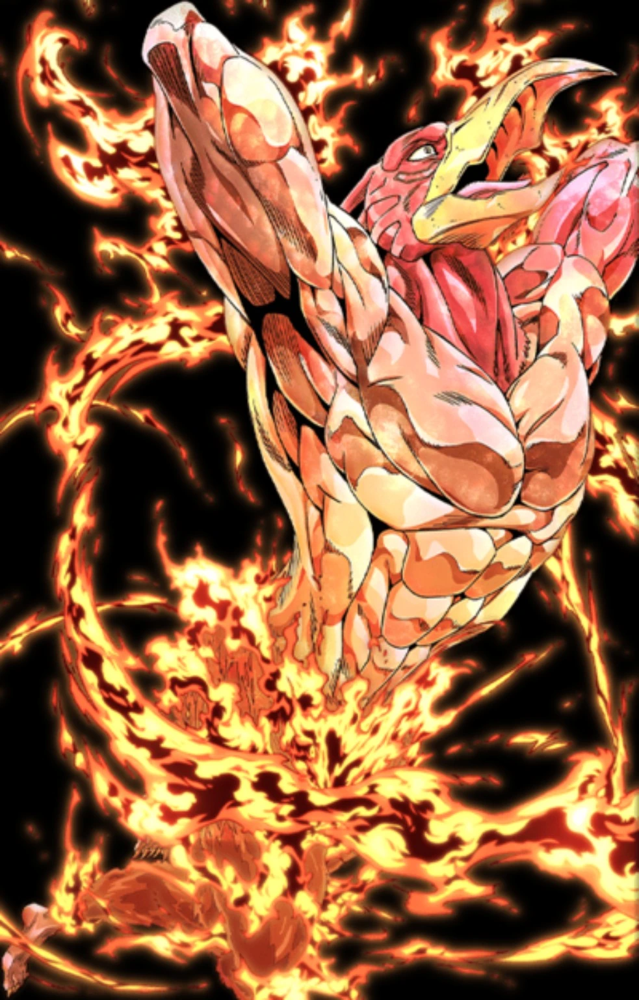

08MAGICIAN'S RED
Ranged / Fire / Horde Control
MAGICIAN'S RED
บทบาท:
ระยะไกล / ไฟ / คุมฝูง / Utility
ความยาก:
กลาง
เหมาะกับ:
คนที่ชอบโจมตีจากระยะ คุมฝูงด้วยไฟ และต้องบริหาร Fire Gauge ไปพร้อมกัน
FIRE GAUGE
สูงสุด 100 • ฟื้น 2/วิ ดังนั้นจาก 0 → 100 ใช้เวลาประมาณ 50 วิ
- Fireball: 8
- Flame Spray: 20
- Fire Control: ฟรี
- Cross Fire: 32 พื้นฐาน / ราว 55 เมื่อชาร์จเต็ม
สกิล 1 — FIREBALL
คูลดาวน์ประมาณ 1.7 วิ • ระยะ 8 ช่อง • ชาร์จเต็มประมาณ 1.05 วิ
ลูกไฟวิ่งตามแนวที่เล็งจริง ถ้ามีตัวอื่นยืนขวางก่อนก็จะโดนก่อนเป้าหมายด้านหลัง
ยังใช้จุดอุปกรณ์ที่รองรับได้ และถ้าชาร์จเต็มแล้วไม่โดนตัวละครหรืออุปกรณ์ จะสร้างไฟบนพื้นได้เมื่อคูลดาวน์ภายใน 9 วิ พร้อม
สกิล 2 — FLAME SPRAY
คูลดาวน์ประมาณ 5.2 วิ • ระยะ 5.2 ช่อง • ปกติ 22 hit • ชาร์จเต็ม 32 hit
เหมาะกับการกดฝูงในทางแคบและสามารถจุดไฟเป้าหมายที่รองรับได้ ระวังใช้ใกล้ฐานไม้ เพราะไฟไม่ได้แยกว่าอะไรเป็นของเรา
สกิล 3 — FIRE CONTROL
คูลดาวน์ประมาณ 4.4 วิ • รัศมีพื้นฐาน 3.2 ช่อง และชาร์จเต็มได้ราว 4.32 ช่อง
ไม่ทำดาเมจและไม่เสีย Fire Gauge ใช้ดับไฟบนพื้นและดับตัวละครที่กำลังไหม้ รวมถึงผู้เล่น
ถ้าเพื่อนไฟไหม้ กดสกิล 3 ก่อน แล้วค่อยถามทีหลังว่าไปทำอะไรมา
สกิล 4 — CROSS FIRE BOMB
คูลดาวน์ประมาณ 12 วิ • ระยะ 8 ช่อง • รัศมีพื้นฐาน 3.2 ช่อง • ชาร์จเต็มประมาณ 1.45 วิ และรัศมีได้ราว 5.92 ช่อง
เป็น Burst AOE หลักของ Magician's Red และสร้างไฟบริเวณจุดกระทบ ค่า Fire Gauge เริ่มที่ 32 และเพิ่มขึ้นตามระดับชาร์จจนราว 55 ตอนเต็ม